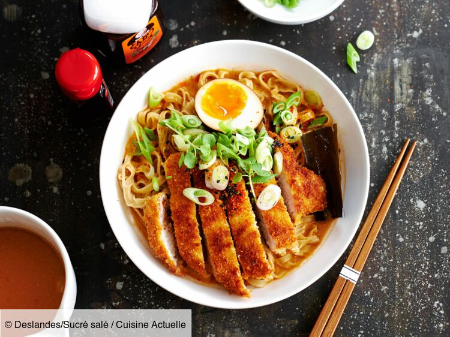

Ramen au poulet

Description
Le ramen au poulet est une recette incontournable de la gastronomie japonaise.
Existante sous forme de soupe instantanée, il est pourtant possible de la concocter
soi-même facilement. La soupe ramen est préparée avec des nouilles, du poulet, des œufs
et agrémentée de sauce soja. Cette recette est à la fois équilibrée et gourmande. Il n'y a
rien de bien compliqué dans la réalisation de ce succulent shoyu-ramen qui sera parfait au
quotidien ou pour les plus grandes occasions.
Ingredients
- Nouilles ramen(s) 200 g
- Escalope(s) de poulet 2
- Œuf(s) 2
- Gousse(s) d'ail 2
- Ciboule 2
- Bouillon de volaille 2 cube(s)
- Sauce soja 4 c. à soupe
- Huile de sésame 2 c. à soupe
- Graines de sésame 4 c. à café
- Mirin 3 c. à soupe
Steps
- Faites bouillir une casserole d'eau salée. Plongez les nouilles dedans et faites-les cuire quelques minutes. Égouttez les nouilles et réservez dans un bol.
- Faites cuire les œufs pendant 6 min dans une casserole d'eau bouillante. Retirez du feu et plongez les œufs dans de l'eau froide. Écalez les œufs et réservez.
- Emincez finement la ciboule. Réservez.
- Coupez le poulet en petits morceaux et faites-les revenir dans une poêle. Une fois qu'ils sont légèrement dorés, ajoutez une cuillère de sauce soja et une cuillère de mirin. Lorsqu'ils ont bien absorbé la sauce, couper le feu et réserver.
- Dans une casserole, faites bouillir de l'eau (400 ml par personne). Plongez-y les cubes de bouillon de volaille. Ajoutez 3 cuillères à soupe de sauce soja, 2 cuillères à soupe de mirin, 2 cuillères à soupe d'huile de sésame. Ecrasez 2 gousses d'ail dans le bouillon. Portez à ébullition.
- Lorsque le bouillon bout, coupez le feu et versez-le dans le bol où se trouvent les nouilles. Répartissez les lamelles de poulet ainsi qu'un œuf coupé en deux. Ajoutez la ciboule finement émincée. Parsemez de graines de sésame. Dégustez sans attendre.